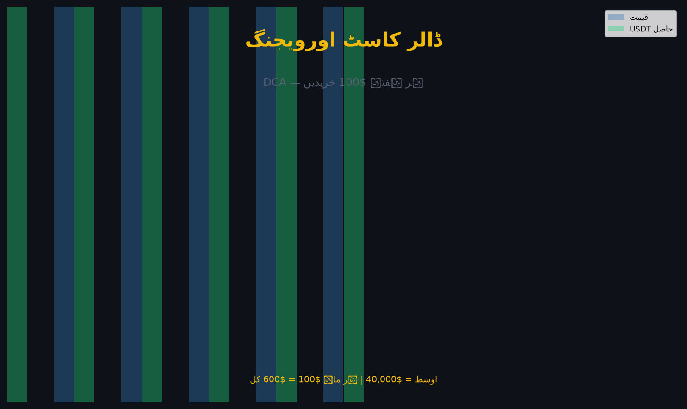

DCA (Dollar-Cost Averaging) ایک سرمایہ کاری حکمت عملی ہے: ہر ماہ/ہفتے مقررہ مقدار (مثلاً $100) خریدنا، چاہے قیمت کچھ بھی ہو۔ اس کا مقصد "مکمل قیمت پر خریدنا" ہے نہ کہ "بہترین قیمت پر" — اور یہ لمبے عرصے میں اوسط لاگت کو بہتر کرتی ہے۔

طریقہ: ہر ماہ $100 → BTC (قیمت سے قطع نظر)
جنوری: BTC $60,000 → 0.001667 BTC
فروری: BTC $80,000 → 0.001250 BTC
مارچ: BTC $40,000 → 0.002500 BTC
کل: $300 → 0.005417 BTC
اوسط لاگت = 300 ÷ 0.005417 ≈ $55,385🔴 اہم نکتہ: $40,000 پر خریدنا $80,000 سے اچھا نہیں — بلکہ سستا ملنا اچھا ہے۔ DCA کے لیے درحقیقت "سستا بازار" بہتر ہے، کیونکہ آپ کو زیادہ یونٹ ملتے ہیں۔
⚠️ اوسط قیمت "اوسط قیمتوں کا اوسط" نہیں ہوتی — بلکہ کل رقم ÷ کل مقدار ہوتی ہے۔
غلط طریقہ: ($60,000 + $80,000 + $40,000) ÷ 3 = $60,000 ← غلط
صحیح طریقہ: $300 ÷ 0.005417 = $55,385 ← درست💡 یہی وجہ ہے کہ ہر عرصے میں ہی رقمی خریداری (خبرین: $100 ماہانہ) قدرتی طور پر اوسط لاگت کو گرا دیتی ہے۔
| پہلو | Lump Sum (ایک ساتھ) | DCA (تقسیم) |
|---|---|---|
| قیمت کا خطرہ | زیادہ (غلط وقت پر پھنسنا) | کم (تقسیم) |
| مارکیٹ کا وقت | بہترین پر زیادہ فائدہ | ہموار |
| ذاتی دباؤ | زیادہ | کم |
| یونٹ کی لاگت | جیسا نصیب | اوسط |
| کس کے لیے | جس کے پاس بڑی رقم + تجربہ | تنخواہ دار، طویل مدتی |
✅ مطالعات عام طور پر Lump Sum کو تھوڑا بہتر دکھاتی ہیں، مگر DCA جذباتی طور پر بہتر اور پائیدار ہے — اور تجارت میں "ٹکنالوجی کے مزید" سے بڑا حصہ پائیداری ہے۔
| فائدہ | وضاحت |
|---|---|
| قلق ختم | "صحیح وقت" کی فکر نہیں |
| ضبط کی تربیت | باقاعدہ عادت |
| ایک وقت کی فیصلگی | غلط قیمت کا اثر کم |
| طویل مدتی | بچت کی طرح کرپٹو جمع |
Buy Crypto → Recurring Buy (Auto-Invest)
→ کوائن چنیں → رقم + تعدد (روزانہ/ہفتہ وار/ماہانہ)
→ ادائیگی کا ذریعہ → شروع💡 بائننس "Auto-Invest" سے ہفتہ/ماہ کے حساب سے خودکار خریداری بھی ممکن ہے — یعنی DCA کو مکمل خودکار بنایا جا سکتا ہے۔
"وقت بازار میں رہنا، نہ کہ بازار کا وقت پکڑنا۔" DCA کسی کو امیر بنانے کا جادو نہیں — یہ صرف ضبط کو مکینیکل بنا دیتا ہے، اور ضبط ہی لمبے عرصے میں مارکیٹ کو ہرانے کا واحد آزمودہ راستہ ہے۔